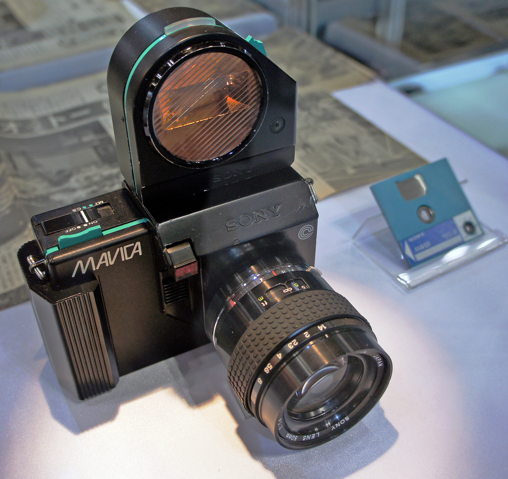

Sony Mavica (1981 prototype)
The world's first electronic still camera — film replaced by a floppy disk and a TV playback ritual

Overview
On August 25, 1981, Sony unveiled a prototype of the Mavica — short for Magnetic Video Camera — as the world's first electronic still video camera. Despite the modern associations of 'video camera,' the 1981 Mavica was not digital. Its CCD sensor produced an analog video signal in NTSC format at 570x490 resolution, and pressing the shutter wrote a single frame as FM-modulated magnetic tracks onto a 2-inch Mavipak floppy disk, 50 images per disk.
The interaction model is the strange, embodied part. The camera body was a conventional single-lens-reflex with three interchangeable bayonet lenses (a 25mm f/2, a 50mm f/1.4, and a 16-65mm f/1.4 zoom). Instead of film, the floppy disk was the medium. To see your pictures, you removed the disk and inserted it into a special playback viewer unit plugged into a television. Capture and review lived on two different devices, connected only by a physical disk you carried between them. The image was not a file but a TV picture.
Sony also demonstrated a thermal transfer printer called the Mavigraph, which printed the captured images on A5 paper in a five-minute process. Japanese news professionals reportedly 'plagued the firm with requests for the camera.' The Mavipak disk format was later adopted industry-wide as the Video Floppy (VF) standard, and the Mavica name continued through analog ProMavica models in the late 1980s before being reused for digital cameras in the 1990s.
Deep dive
The Mavica replaced film with a 2-inch Mavipak magnetic disk holding 50 still frames. The shutter wrote one analog NTSC video field per frame as FM-modulated tracks — the same physical principle as a VCR, but for a single photograph. The disk was the film: removable, rewritable, and later standardized industry-wide as the Video Floppy (VF) format.
There was no onboard screen on the 1981 prototype. To review a picture you took the disk out of the camera and inserted it into a separate playback viewer unit connected to a television. The interaction is a physical handoff — the disk is the only thing that travels between capture and display.
The Mavica's image was an analog video signal — a TV picture written to a magnetic disk — not a digital file. This distinguishes it cleanly from the museum's Dycam Model 1 (1990), which stored real digital image data. The Mavica sits at the hinge between film and digital: photography as a broadcast signal you can hold in your hand.
The prototype stunned the photographic world and created the still-video category. Sony demonstrated the Mavigraph thermal printer alongside it, and news professionals clamored for units that would make pictures immediately compatible with computing and telecommunications.
The 1981 prototype was never sold in that form. Its floppy-disk medium became the Video Floppy standard used by Canon's RC-701 and other still-video cameras of the 1980s, making it the ancestor of an entire brief industry.
Team & pioneers
- Sony Corporation. Developed and unveiled the Mavica prototype on August 25, 1981; established the Mavipak/Video Floppy medium.
- Akio Morita. Sony chairman who presented the Mavica at the 1981 unveiling.
Media
